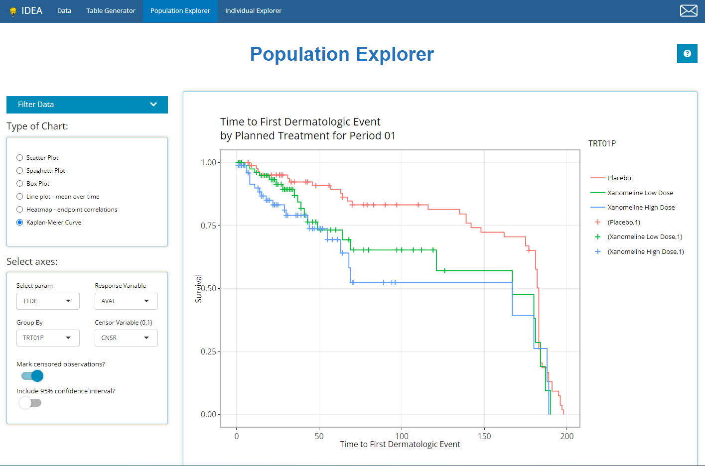

02 Population Explorer
x02_Pop_Exp.RmdThis tutorial will walk through how to leverage the IDEA app’s Population Explorer tab. It exists to glean insights about different patient populations participating in the trial. The Population Explorer tab will interface with all data types: ADSL, BDS, OCCDS, and TTE. This tutorial will use 5 CDISC Pilot data files: An ADSL, ADVS, ADLBC, ADAE, and the ADTTE.

Tab layout
Below is a generic image of the population explorer, where an example box plot is being rendered. There are 4 main components to this tab, the first 3 are located on the side panel:
The filter data widget
The type of chart selection
The plot controls
The desired plot

Together, we’ll take a look at each of element of the Population Explorer, including the chart types and their controls, plot options and interactivity. But first, a quick note on filtering!
Filtering
Like other IDEA tabs, the “Filter Data” widget manipulates the data before it is processed on the tab, in this case: plotted. Filtering will not be discussed in detail guide so you’re highly encouraged to view the article called 04 Filtering for a complete filtering tutorial. However, we will address a few things that are unique about filtering in the Population Explorer. By clicking the drop down arrow, the filtering widget expands to reveal the following controls:

First, this is the only tab that has an “Apply Filters” toggle that precedes the usual ADaM data selector and “Add Filter” button. This toggle provides unique functionality when plotting, giving the user the following luxuries:
Build filters all at once. If the user has many filters to define on variables from multiple data sources, the chart will continually re-render after each filter is added. With large data sets, this can lead to a user experience that is somewhat slow and sluggish. As such, its advised to define your filters on the front end and then toggle “Apply Filters” to the “on” position to save time and compute power. Below is an example workflow displaying this practice.
Switch back and forth between filtered and un-filtered versions of the plot. This can be useful to verify expected changes in the plot before and after filtering.

Second, notice that the the text describing the filtering appears below the chart on the left-hand side.
Type of Chart
Below are the currently supported chart types, which can be expanded to include any number of charts, just send the developers an email with your request!

It’s important to note that the Kaplan-Meier Curve option will not appear unless an ADaM of class TTE (contains the CNSR variable) is uploaded on the Data tab. All other chart types will display by default.
General Plot controls
The user interface to each plot dynamically updates based on the the chart type selection. In general, you’ll be asked to specify how to set up the axes using either variables or parameters from BDS class data sources, among other options. Consistent with the Table Generator, when a parameter is being plotted, often times you’ll need to select “AVAL”, “CHG”, or “BASE” in addition to a specific visit. The only exception, with the exception of the “spaghetti” and “line plot - mean over time” as the x-axis will always be a time variable by design.

If a variable is chosen for plotting, the AVAL/CHG/BASE options & visit selector will disappear:

Besides those general axes set up controls, the “scatter” and “line plot - mean over time” have some “Group data” options in common as well. In general, both drop down lists only contain character or factor variables.

The “Color Plots By” variable helps the user create a different colored line for a variable’s categories. In the example below, here is a plot where “Color Plots By” is NONE:

If we switch “Color Plots by” to AGEGR1, the application creates the following line plot of mean over time:

Similarly, if we leave “Color Plots By” as NONE and change “Separate Plots By” to TRT01P, the app creates a separate plot for each planned treatment arm:

Lastly, the user can select a variable for both “Color Plots By” and “Separate Plots By” to view a plotted line for the combination of AGEGR1 and SEX.

The Plots
The plot is displayed prominently on the main panel, and with a host of interactive features when moused over. In the example below, the “line plot - mean over time” contains additional information available at each plotted point like the visit variable and visit value, plus a slurry of statistics for the parameter selected (ALB in this case): mean, standard error, standard deviation, and patient count (N). Also notice the SEX variable is selected for “Color Plot By”. Thus, when we hover, the info boxes are color coordinated and include the line’s SEX value.

Notice how the user is also allowed to zoom-in / pan-out of any portion of the graph, which retains only the desired points. This can be helpful to filter out outliers without using the “Filter Data” widget or just to zoom in on a cluster of densly populated points.
Last, click the hover over and select the small camera icon in the top right-hand corner to download a PNG of any plot directly to your browser. This can be handy for sharing findings with colleagues. Or, users are equally welcome to use the snipping tool / snaggit to capture results as well.
Depending on the plot, the aggregated data used to plot values may be included below the plot for easy download to excel. Right now, that includes the “line plot - mean over time” and “Heatmap - endpoint correlations”. If desired, select how many rows you’d like to view, search through or sort the data and just click the “Excel” button on the top left corner when ready to download.